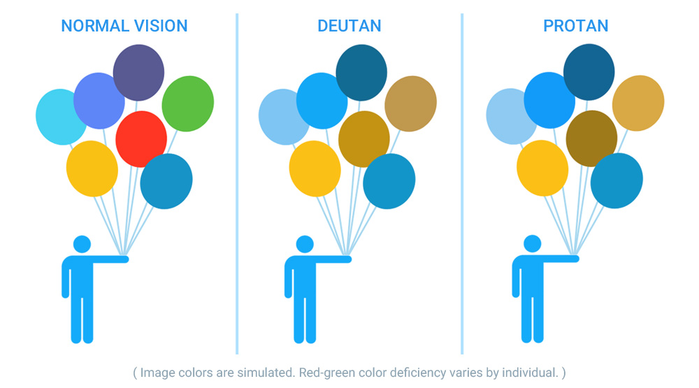

3 steg för att välja ett bra färgschema för din webbplats
Steg 1
Välja en dominerande färg som din varumärkes färg Det här är den färg som du vill att din målgrupp ska komma ihåg när de tänker på dig. Använd bara din dominerande färg på ett begränsat antal platser där du vill att besökarna på webbplatsen ska uppmärksamma, eller om du vill att dina besökare ska vidta vissa åtgärder.
Steg 2
Välja 1 till 2 accentfärger för att skapa ett färgschema för din webbplats När du väl har din dominerande färg är det väldigt lätt att hitta dina accentfärger genom att använda färgkorrigering verktyg som Adobe Color CC-tool.
Steg 3
Välja en bakgrundsfärg för att slutföra din design
Använd Adobe Color CC-tool för att skapa olika nyanser och ljusstyrka på din dominerande färg annars använd
vit eller
mycket ljusgrå som din bakgrundsfärg. På detta sätt kommer innehållet alltid att skina igenom.
Varje färg har en mening

Färgvärdes Notering
Det finns tre grundläggande sätt att ange färg på, med hjälp av RGB(A), Hexadecimala eller ett färgnamn.

Färgnamn
Benämningarna och definitionerna på färgerna har kritiserats, med all rätt. Ett utmärkt exempel är att
“dark gray” är ljusare
än “gray”. Samt att alla gråa färger finns två gånger med två olika stavningar “gray” och “grey”. Ett annat
märkligt exempel är
att det finns en “medium violet red” men ingen “violet red” eller att det till exempel finns “light
goldenrod yellow” men ingen
“goldenrod yellow” (se bild)
Numera är det inte många som använder färgnamn, men som nybörjare kan det däremot vara enklare att skriva
“tomato” än “#FF6347”.
Flera färger har olika namn men är varandras motsvarighet:
aqua / cyan
fuchsia / magenta
Alla varianter av grå finns i alternativen gray / grey
Hexadecimalt värde
Hexadecimala färgkoder anges med hjälp av en hashtag # i början.
En färgkod består av 6 stycken tecken där varje tecken kan vara siffrorna 0-9 eller bokstäverna A-F.
Färgkoden visar intensiteten av röda, gröna och blåa komponenter.
Färgkoden #CCCCCC visar exempelvis en ljusgrå färg.
Om en färg ska träda fram maximalt mycket så anges den med FF i koden och om en färg tvärtom ska träda fram
minimalt så används 00.
Vitt ljus består till exempel av alla färger så det representeras av koden #FFFFFF. Svart innehåller inga
färger och har färgkoden #000000.
Det går lika bra att skriva med tre F #FFF istället för sex för att få färgen vit. Samma gäller svart #000.
R, G, B
Med RGB(AA) är färgerna uppdelade, där R står för mängden röd, B står för mängden blå och
G står för mängden grön. AA är alpha och anger hur transparant en färg är.
Färgens intensitet anges som ett heltal mellan 0 och 255.
RGB-färgvärden stöds i alla webbläsare.
HSL
HSL står där för Hue, Saturation, Lightness (nyans, mättnad och ljushet).
Exempel: --- OBS! hitta nytt!
a { color: hsl(210, 13.3%, 73.3%); }
Opacity / Transparency
Opacity används för att ange hur transparent/genomskinligt en färg ska vara. ... med ett alfavärde.
Standard är heltäckande vilket motsvarar 100% opacity.
Exempel: --- OBS! hitta nytt!
a { color: green; }
| Färg | Färgnamn | R,G,B | HEX |
|---|---|---|---|
 |
Vit | (255,255,255) | #FFFFFF |
 |
Svart | (0,0,0) | #000000 |
 |
Röd | (255,0,0) | #FF0000 |
| Lime | (0,255,0) | #00FF00 | |
 |
Blå | (0,0,255) | #0000FF |
Färgblindhet
Färgerna du väljer påverka inte bara din webbsidas utseende, vad du förmedlar och hur den får dina besökare att känna, utan också vad besökare med olika typer av funktionsnedsättningar kan ta del av tex färgblindhet. Nu är detta inget vi som programmerare kommer sitta med utan det hör mer till webbdesign, men det är för den delen inte dumt att ha kunskapen. En behöver inte ändra och byta ut hela ens webbsida eller ha en egen speciell sida anpassad för färgblindhet. Det finns många stödverktyg och sätt för den med färgblindhet att själv ändra inställningar så att det passar den själv. Tydligen ska Mark Zuckerberg vara färgblind, vilket i så fall tydligt kan ses på Facebooks färgskala. Ljusblått är nämligen den färg som är tydligast för personer med sämre färgseende. Färgblindhet betyder att en vanligtvis har en minskad förmåga att skilja mellan nyanser av vissa färger - oftast röda och gröna, mindre vanligt är blåa och gula. Dessa färger har en förmåga att smälta in i varandra, vilket kan se ut så här:
Tänk på:
Undvik följande färgkombinationer:
Grön - Röd
Grön - Brun
Blå - Lila
Grön - Blå
Ljusgrön - Gul
Blå - Grå
Grön - Grå
Grön - Svart
Använd tjocka linjer: Vissa milt färgblinda människor kan se en färg, men bara om det finns tillräcklig mycket av den. Om en färglinje är för tunn visas den inte som rätt färg eller inte alls.
Symboliskt element: Om du till exempel använder rött för att signalera "dåligt", "varning" eller "se upp", överväga att lägga till ett annat symboliskt element för att få fram budskapet även till besökare med sämre färgseende.
Kombinera med texturer: För till exempel kartor och diagram, försök att använda textur utöver färg för att skilja mellan objekt.
Flera färger har olika namn men är varandras motsvarighet:
aqua / cyan
fuchsia / magenta
Alla varianter av grå finns i alternativen gray / grey
Hexadecimalt värde
Hexadecimala färgkoder anges med hjälp av en hashtag # i början.
En färgkod består av 6 stycken tecken där varje tecken kan vara siffrorna 0-9 eller bokstäverna A-F.
Färgkoden visar intensiteten av röda, gröna och blåa komponenter.
Färgkoden #CCCCCC visar exempelvis en ljusgrå färg.
Om en färg ska träda fram maximalt mycket så anges den med FF i koden och om en färg tvärtom ska träda fram
minimalt så används 00.
Vitt ljus består till exempel av alla färger så det representeras av koden #FFFFFF. Svart innehåller inga
färger och har färgkoden #000000.
Det går lika bra att skriva med tre F #FFF istället för sex för att få färgen vit. Samma gäller svart #000.
R, G, B
Med RGB(AA) är färgerna uppdelade, där R står för mängden röd, B står för mängden blå och
G står för mängden grön. AA är alpha och anger hur transparant en färg är.
Färgens intensitet anges som ett heltal mellan 0 och 255.
RGB-färgvärden stöds i alla webbläsare.